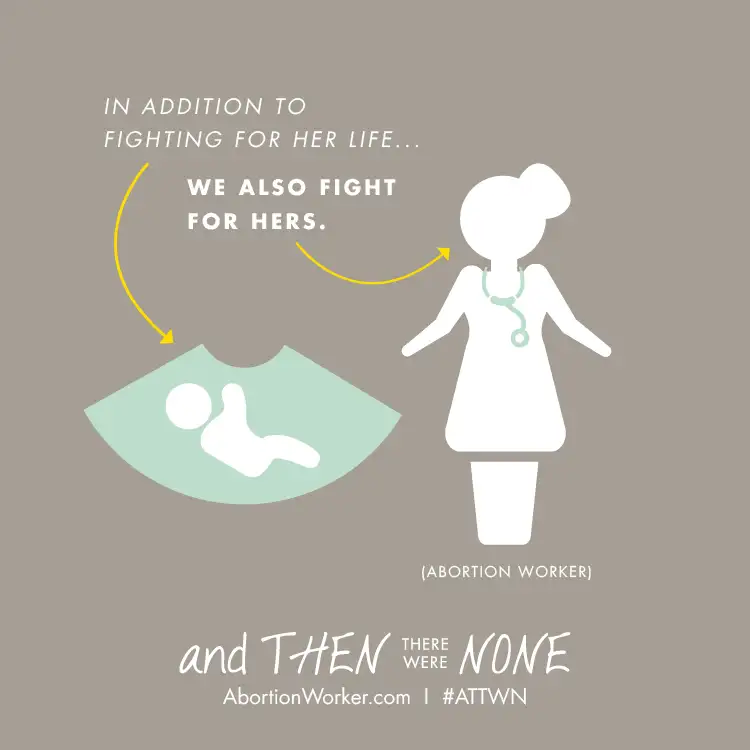

To the staff of the Red River Women’s Clinic:
Inspired by a young friend of mine who has written several open letters to your escorts, I wanted to extend a similar offering to all of you — the workers on the inside who pick up where the escorts leave off, guiding women into exam and surgical rooms to prepare for their abortions each Wednesday Downtown Fargo.
First, I think we can agree that divisions exist between what you do inside the facility and what we prayer advocates hope to accomplish on the sidewalk each week in our city. We are natural adversaries to some degree. Because of this, emotions can run quite high at this “last stand” corner. Being that we’re all human besides, we’re all guilty of allowing, at times, our different stances to further divide us and dictate the moods we bring Downtown.
As a prayer advocate who longs for the day abortion is no more, I’m not immune to frustrated feelings on Wednesdays. But at times, I also wonder whether we all work too hard on keeping those divisions in place, and forget about our commonalities. I wonder if, by focusing so much on our varying perspectives, we limit what we can do together, and where we converge.
At times, I’ve let my sadness over the tragic losses that happen there block my ability to remember that you are my sisters and brothers. But I think it’s worth working on. And so I’m going to give it a try. It doesn’t mean I’ll endorse what you do, but at the very least, I want to try to see past the work itself, and peek into where your hearts might be.
To that end, I’ve been thinking less about the stress on the sidewalk, and more about the stress that must be a regular occurrence inside the facility itself. I’ve been wondering about those of you whom we don’t see often, but glimpse on occasion walking past, often in blue or purple scrubs. When I really think about what it must be like for you every Wednesday, I wonder how hard it must be — not just because of the presence of the prayer advocates, but because of what you are having to do, and hold up, each week.
I’m assuming most of the clients arrive pretty stressed. We witness it on the sidewalk, even before we prayer advocates or the escorts have reached them. What they’re facing can’t be easy, and for you, it’s got to be tough, too, trying to smooth over their worries, and convince them that everything’s going to be okay.
I can imagine that some Wednesdays, after a long day at the clinic, a deep sadness engulfs your heart. I don’t know what it’s like to have to carry that burden, but I’m thinking it must weigh heavy at times. And I wonder if some of you workers even wish some days that there were another path. Maybe not, but I wonder. I mean, most jobs have their downsides, but the abortion industry can’t be a happy long-term lot. So I wonder if you ever dream of being involved in work that doesn’t carry the stigma of the abortion industry.
I’m throwing out these thoughts because I know abortion workers who have left the industry. And after hearing some of their stories, I’ve gained some insight as to what it might be like for you. I also know, from their sharing, that this industry can be very difficult to leave. But not impossible. Ministries like former abortion-clinic manager Abby Johnson’s “And Then There Were None” can be a crucial help.

I’m directing my thoughts your way today in the hopes they might provide an opening, a way out, that can assist you when the time is right. Maybe you’ll respond that you absolutely love your job. And it could be true that right now, you do. But maybe it won’t always be the case. Or maybe you’ve already begun to feel some misgivings. You wouldn’t be the first, so know that, at the very least.
I can’t know what it’s like for you. I only know what others who’ve left have said. Many of them felt stuck. They wondered what their job prospects would be after leaving the abortion industry, and what their colleagues might think. But in time, their misgivings about the work itself overshadowed their fears, and through Abby’s ministry, they discovered a more edifying path — one that didn’t cause the daily external, and even internal, conflict.
It’s not too late to change courses. And I know many of you might be miffed that I would suggest such a thing, but I’m offering the possibility even so, because I think it’s worth the risk. When my friend Ramona Trevino left the abortion industry, it was in large part because of prayers and hope that were made visible to her. The same with Abby. I want you to know this support that brings such hope, too.
As much as we prayer advocates are focused on the clients and their babies, and our hope that abortion will someday become unthinkable society-wide, we also have the ability to set aside our goals long enough to see that your life is every bit as valuable as the ones we’re trying to save. You were made for something greater than this, dear Red River Women’s Clinic staff members. Yes, Tammi Kromenaker, director of this staff, you too.
With kind regard, and in hope,
Roxane, prayer advocate and sister